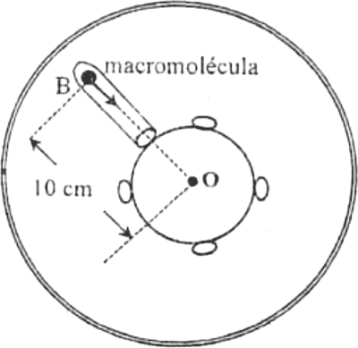
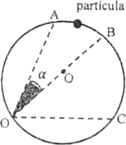
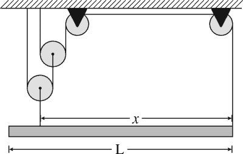
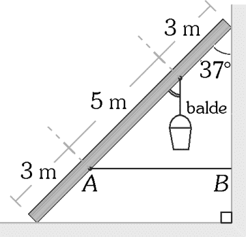
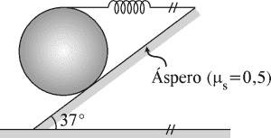
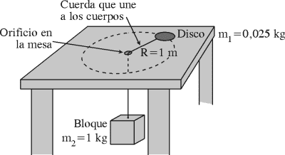

Prueba Suficiencia Academica
Este examen ha sido creado en base a exámenes de admisión de diferentes gestiones de la universidad, con el objetivo de brindarte una práctica más realista y efectiva para tu preparación académica. (SE ACTUALIZA CADA AÑO)
1. Resolver:
Seleccione el pico más elevado de la Cordillera de los Andes


2. Resolver:
Una persona boliviana que viaja a España con el propósito de establecer su residencia permanente es considerada:
3. Resolver:
La relación entre la superficie territorial de un país, departamento o municipio y el número de habitantes que viven en ella se denomina:
4. Resolver:
La diversidad de pisos ecológicos que presenta Bolivia se explica principalmente por la combinación de
5. Resolver:
¿Cuál de los siguientes tipos de suelo se caracteriza por su alta fertilidad y es ampliamente aprovechado para el desarrollo de actividades agrícolas?
6. Resolver:
¿Qué científico formuló y difundió la teoría de la Deriva Continental mediante una obra publicada en alemán en 1922?
7. Resolver:
¿En cuál de las siguientes ciudades de Bolivia el Sol se oculta primero durante un mismo día, considerando la diferencia de longitud geográfica?
8. Resolver:
La cuenca del río Mamoré nace en los Andes bolivianos, recorre gran parte del territorio nacional y forma parte de la cuenca amazónica hasta unirse con el río Beni. ¿A qué principio geográfico hace referencia principalmente esta descripción?
9. Resolver:
El Chaco es un territorio situado en la parte meridional del sur de america, dividido en 3 partes: chaco austral o sur,chaco central, chaco boreal, el chaco austral y el central estan bajo la soberania de
10. Resolver:
Al fundarse Bolivia tenia una superficie aproximada de.... que abarcaba desde el pacifico hasta el matogrosso
11. Resolver:
En las llanuras amazónicas de Bolivia existen elevaciones alargadas con pendientes pronunciadas que, durante la época de lluvias intensas, son propensas a presentar deslizamientos de tierra. ¿Cómo se denomina este tipo de relieve?
12. Resolver:
Actualmente, instituciones públicas y privadas de Bolivia emplean los Sistemas de Información Geográfica (SIG) para la planificación territorial, el manejo de recursos naturales y la gestión de riesgos. ¿Cuál es la principal característica de un Sistema de Información Geográfica (SIG)?
13. Resolver:
La contaminación acústica producida por el tránsito vehicular, la actividad industrial y otras fuentes de ruido puede afectar tanto a las personas como a la fauna. ¿Cuáles de las siguientes afirmaciones corresponden a consecuencias del ruido excesivo?
I. Provoca el desplazamiento de especies animales hacia zonas menos ruidosas.
II. Puede alterar el equilibrio de los ecosistemas al modificar el comportamiento de la fauna.
III. La exposición prolongada al ruido puede generar estrés y debilitar el sistema inmunológico en las personas.
IV. Produce grietas y fracturas en el suelo debido a la intensidad de las ondas sonoras.
14. Resolver:
Bolivia registra periódicamente movimientos sísmicos, especialmente en su región occidental, debido a la interacción entre placas tectónicas. ¿Cuál es el principal proceso geológico responsable de estos sismos?
15. Resolver:
En las zonas de piedemonte de Bolivia, la acción conjunta de la gravedad y el agua de escorrentía favorece el transporte y acumulación de sedimentos en las laderas. ¿Cómo se denominan estos depósitos de materiales?
16. Resolver:
¿Cómo se denomina la distancia angular existente entre cualquier punto de la superficie terrestre y la línea del Ecuador, medida en grados hacia el norte o hacia el sur?
17. Resolver:
¿Quién lideró la expedición que inició el primer viaje de circunnavegación alrededor del mundo, demostrando de manera práctica la posibilidad de navegar completamente el planeta?
18. Resolver:
¿Cómo se denominan las líneas imaginarias que unen el Polo Norte con el Polo Sur y son perpendiculares a la línea del Ecuador?
19. Resolver:
El reisnulius es un principio que determina la posesion de territorio que
20. Resolver:
¿Cuál es el río de mayor longitud e importancia hidrográfica dentro del territorio boliviano?
21. Resolver:
Marque la alternativa donde aparecen nombres de países que forman parte del área dialectal actual de la lengua española.
22. Resolver:
En el enunciado «los niños actúan de la misma forma como ustedes actúan en los sismos», las palabras subrayadas mantienen relación semántica de
23. Resolver:
Elija la alternativa que presenta frase nominal compleja.
24. Resolver:
En el enunciado «el presidente anunció el alza del impuesto selectivo al consumo», las frases nominales cumplen, respectivamente, las funciones de
25. Resolver:
Indique la opción donde hay perífrasis verbal.
26. Resolver:
Marque la opción en la cual el verbo expresa aspecto perfectivo.
27. Resolver:
Seleccione la opción que presente una oración compuesta coordinada conjuntiva copulativa.
28. Resolver:
Seleccione la opción que presenta una oración intransitiva.
29. Resolver:
En el enunciado «mi hermano mayor me dijo que esos árboles de este huerto producen muchos frutos», la proposición subordinada sustantiva cumple la función de
30. Resolver:
En los enunciados «les propongo, amigos, que vayamos al Museo de la Nación» y «estoy seguro de que esta es la respuesta de la quinta pregunta», las proposiciones subordinadas sustantivas cumplen, respectivamente, las funciones de
31. Resolver:
Marque la alternativa en la que hay proposición adverbial concesiva.
32. Resolver:
Marque la alternativa donde hay uso correcto de las letras mayúsculas
33. Resolver:
Señale la alternativa que presenta uso correcto de la tilde.
34. Resolver:
¿En cuál de las siguientes opciones hay uso correcto de las letras mayúsculas?
35. Resolver:
Señale la alternativa que corresponde a una característica del lenguaje humano.
36. Resolver:
Determine qué alternativa presenta escritura correcta.
37. Resolver:
¿Qué alternativa presenta correcto empleo del grafema «v»?
38. Resolver:
¿Qué alternativa presenta mayor cantidad de dígrafos?
39. Resolver:
Marque la alternativa en la que aparecen nombres de países en los que se habla tradicionalmente variedades de la lengua quechua.
40. Resolver:
Cuando el lenguaje cumple función fática o de contacto, el elemento de la comunicación que destaca es:
41. Resolver:
La redencion de la poblacion indigena del collasuyo ante los españoles se dio entre los años
42. Resolver:
Despues de meses de arduo trabajo y de viajes por el territorio boliviano , los dirigentes del MNR desde La Paz dieron la instruccion via telegrafica de iniciar la insurreccion en todo el pais el dia
43. Resolver:
Chiripa fue un sitio emblematico de la formacion de Bolivia, se encuentra en la peninsula de
44. Resolver:
La institucion introducida que permitio al gobierno colonial de los primeros tiempos, agregar a la masa indigena fueron las:
45. Resolver:
El estado tiwanacota se consolido en:
46. Resolver:
Se tiene la hipotesis de que la lengua aymara tuvo su origen en
47. Resolver:
quien escribio en 1909 el libro la revolucion de la intendencia de la paz
48. Resolver:
el concepto del periodo formativo, responde a una nomenclatura basada en el desarrollo
49. Resolver:
En 1925, la proyeccion de la pelicula "la profecia del lago" genero una angustia en el publico, quien dirigio esta pelicula
50. Resolver:
Durante el proceso de independencia, los grupos guerrilleros se encontraban organizados territorialmente desde el Sur. Al norte se encontraba operando Manuel Ascencio Padilla con su esposa Juana Azurduy en la provincia de:
51. Resolver:
Una de las principales acciones del gobierno de Villarroel fue la convocatoria a mediados de 1945 del
52. Resolver:
Las ordenanzas de barcelona o leyes nuevas que prohibian la esclavitud de los indios y regulaban el trabajo impuesto a los indios en las encomiendas fueron dictadas el año:
53. Resolver:
Quien es el autor de la obra tunupa
54. Resolver:
En el primer año de gobierno del presidente Hernando Siles , el Banco Nacional paso a ser
55. Resolver:
Cual fue el año en que la comuna paceña decidio instalar el alumbrado electrico
56. Resolver:
El mito del origen de Tiwanaku cuenta que cuando termino el diluvio en el que habria muerto toda la humanidad , las primeras tierras que asomaron entre las aguas fueron las islas del lago titicaca y desde alli quien ordeno al sol subiera a los cielos fue
57. Resolver:
Entre que años comprende la etapa que esta caracterizada por la nueva cede politica, exportacion del estaño,y desarrollo de ferrocarriles
58. Resolver:
El primer congreso de Trabajadores , en el que participaron artesanos ,mineros,ferroviarios, graficos y empleados de comercio fue el año
59. Resolver:
En la decada del 30, para llegar de ferrocarril desde la paz a oruro ,cuantas horas eran
60. Resolver:
Ante la imposibilidad de dar una solucion diplomatica al conflicto,Chile finalmente hizo la declaracion oficial de guerra a Bolivia y Peru
61. Resolver:
La tercera expedicion auxiliar Rioplatence se dio en mayo de 1815 para tomar potosi, estuvo a cargo de
62. Resolver:
Indique la alternativa correcta despues de determinar si cada proposicion es verdadera o falsa:
I. Existen 8 numeros de 3 cifras tales que al ser divididos entre 37 dan un residuo igual a la cuarta parte del cociente.
II. sean a,b numeros naturales ,(a+x)(b-x)=ab, entonces se tiene que x=0
III.Si D=dx+r con 01 entonces el conjunto {x E Z/D + x =(d+x)c +r } es unitario.
63. Resolver:
Que cantidad de desinfectante al 80% se debe mezclar con 80 litros del mismo desinfectante al 50% para obtener un desinfectante al 60%, indique ademas ademas el porcentaje del desinfectante al 50% de solucion final
64. Resolver:
Un empresario firma una letra por 48 000 bs a ser pagada en 8 meses al 7% de descuento anual. Luego de transcurridos 3 meses decide cancelar la letra pueblos
debe viajar para radicar en Australia. Calcule la diferencia entre la cantidad que recibio y cancelo el empresario en nuevos soles, sabiendo que el acreedor recibio un bono del 0,2% sobre el valor nominal,si se cancelo al final
65. Resolver:
Sean A=1a14, B=1101a y C=1a24a5
Determine la suma de las cifras de C en base decimal, si C=AB
66. Resolver:
El numero N=3b5a(con a>1) tiene 3 divisores mas que M=2a53. Determine la suma de las inversas de los divisores de M.
67. Resolver:
Determine la cantidad de fracciones propias e irreductibles que estan comrpendidas entre 9/33 y 45/47 tales que la suma de sus terminos sea 90.
68. Resolver:
Sea 2ab+6ab+12ab...72ab cuya cantidad de divisores es impar , cuantos valores puede tomar ab
69. Resolver:
El minimo comun multiplo de 2 numeros distintos es al maximo comun divisor de ellos como 35 es a 1. Si el numero mayor es 3017, determine la suma de las cifras del numero menor
70. Resolver:
El precio de un diamante es directamente proporcional al cuadrado de su peso.Asi un diamante cuyo peso es 1,5 gramos cuesta 18000bs. Si este diamante se parte en 2 pedazos. Cual seria el peso de cada parte para tener un precio total optimo?
71. Resolver:
20 escolares asisten al centro recreacional Disneyland, los cuales llevan celular,camara o ambos . Se sabe que 5 escolares llevan ambos accesorios y la porporcion de escolares con solo camara es a los escolares con solo celular como 1 es a 2. Se forman grupos de 5 estudiantes para competir en diversos juegos. De cuantas maneras se pueden formar los grupos que tengan un accesorio solamente del mismo tipo?
72. Resolver:
En un avion el numero abc de personas que viajan satisface 150<abc<300 de los cuales aOc son hombres y ab son mujeres siendo pasajeros,ademas son c aeromozas y a pilotos. Determine la suma de los digitos luego de calcular cuantos hombres mas que mujeres hay en el avion en total.
73. Resolver:
Determine el valor de (a+b+c) si a1a+a2a...a9a=bcd4
74. Resolver:
En la diferencia que se muestra 91001- 71001=.....a, donde la cifra de las unidades es "a", halla a3 + a2+2
75. Resolver:
Sea ab un numero mayor que 40, determine el numero de divisores que tiene el numero abab00
76. Resolver:
Sea A un numero entero positivo de 10 cifras y B=0,abcdefg donde g es diferente de cero,del producto AB se afirma que
I. es un numero entero
II. puede ser entero que tiene 2 cifras
III. puede ser entero que tiene parte entera no nula y parte decimal no nula
77. Resolver:
Dado un cuadrado ABCD de lado a>6, exterior a un plano P.Si las distancias A,B,C al plano P son 3,6,7 halle la distancia D al plano P
78. Resolver:
Sea ABCD un rectangulo M el punto medio de BC, PM perpendicular al plano ABC , O centro del rectangulo , si BC=2AB=8 y PM=AB, entonces el area de la region triangular APO es...
79. Resolver:
El ponente en un Congreso de Matemática mencionó a su audiencia «¡Qué curioso!, la cantidad de personas presentes es igual a la cantidad de fracciones propias e irreducibles que existen de la forma 𝑁/161». ¿Cuántas personas asistieron a dicho Congreso?
80. Resolver:
La profesora Milagros forma grupos de trabajo de por lo menos tres estudiantes por cada grupo. Si en el salón hay 11 estudiantes, ¿cuántas opciones distintas tiene para formar los grupos?
81. Resolver:
La siguiente ecuacion es dimensionalmente correcta ,siendo s=area,a=aceleracion,v=velocidad, determine la ecuacion dimensional

82. Resolver:
Partiendo del empirismo, tres estudiantes proponen sus ecuaciones para el estudio cinematico de una particula. Según la teoría del análisis dimensional, se comprueba que no todas las ecuaciones están bien planteadas, siendo la(s) correcta(s):

83. Resolver:
En la figura, el módulo del vector diferencia es

84. Resolver:
Una motocicleta parte del reposo con una aceleración de 5 m/s². ¿Qué tiempo tardará en adquirir una velocidad de 90 km/h?
85. Resolver:
De los siguientes enunciados:
I) La temperatura de fusión depende de la presión exterior.
II) El paso de vapor a sólido se llama sublimación.
III) El calor de fusión representa la cantidad de calor que se debe dar a la unidad de masa de alguna sustancia que ya ha alcanzado su punto de fusión, para transformarlo en líquido, a la misma temperatura.
86. Resolver:
La cabina de un ascensor de 4 m de altura comienza a elevarse con una aceleración igual a 8 m/s². Sí a !os 2,5 segundos, después del inicio de la ascensión, del techo de la cabina se desprende un perno; entonces el tiempo, en segundos, de la caída libre del perno hasta que llegue al piso del ascensor es:
87. Resolver:
Escoja el enunciado incorrecto
88. Resolver:
La figura muestra un cuarto de circunferencia de radio R,determinar suma de vectores x,y

89. Resolver:
Si
es
90. Resolver:
Suponiendo que se quiere diseñar un sistema de bolsa de aire que proteja a un conductor que viaja en un automóvil a 100 km/h desde su impacto frontal hasta llegar al reposo después de recorrer un metro.
De esta situación se deduce que:
1. Se genera una aceleración de 390 m/s² en dirección contraria al movimiento del automóvil. 2. La bolsa de aire debe inflarse en un tiempo más rápido que 0,07 segundos.
3. La bolsa de aire dispersa la fuerza sobre un área grande del pecho, evitando que el pecho del conductor se lesione con el volante.
4. La bolsa de aire no es efectiva si esta se infla en un tiempo más rápido que 0,1 segundos.
91. Resolver:
Considere el fenómeno de ebullición del agua y diga cuál de las siguientes afirmaciones es correcta:
92. Resolver:
La figura muestra una ultracentrifugadora, cuyo rotor gira a 60 000 rpm. El tubo de ensayo es perpendicular al eje de rotación y el punto B está a 10 cm del eje de rotación. La aceleración centrípeta ejercida por el líquido sobre la macromolécula en B, en 10⁵π² m/s², es
(O: punto de eje de rotación)

93. Resolver:
Para que un gramo de agua cambie del estado líquido a vapor se le debe añadir 539 calorías a la presión constante de una atmósfera. ¿Cuál de los siguientes enunciados es falso?
94. Resolver:
Si una partícula tiene una rapidez angular constante de π/45 rad/s, recorre el arco AB en un tiempo de 10 segundos más respecto al tiempo que le toma en recorrer el arco BC; y considerando que el ángulo AOC mide 80°, entonces el valor de a es
(O: centro de la circunferencia)

95. Resolver:
En la figura, la tabla homogénea está horizontal y en equilibrio, debido a un sistema de poleas y cuerdas homogéneas e inextensibles, despreciando la fricción, el valor de x es

96. Resolver:
Se tiene una escalera ingrávida apoyada en una pared lisa de la que se suspende un balde de pintura de 10 N de peso total. Si el piso es liso, entonces la tensión del cable horizontal AB que sujeta a la escalera, en N, es:

97. Resolver:
En el sistema en equilibrio de la figura, el resorte tiene una constante elástica de 40 N/m y la esfera homogénea de 44 N está a punto de resbalar.
La elongación que experimenta el resorte es

98. Resolver:
Dadas las siguientes proposiciones:
I. Si la fuerza neta sobre un cuerpo es cero, este puede estar en movimiento.
II. Un cuerpo siempre se mueve en la dirección y sentido de la fuerza aplicada sobre él.
III. La fuerza centrípeta y la fuerza centrífuga constituyen un par acción-reacción. Indique la secuencia de verdad (V) o falsedad (F).
99. Resolver:
En la figura, el disco gira sobre la mesa horizontal sin fricción describiendo un movimiento circular uniforme, mientras el bloque suspendido permanece en equilibrio.
Si g = 10 m/s², el periodo de revolución del disco es

100. Resolver:
Una grúa ejerce una fuerza ascendente de 31 kN sobre un bloque, para levantarlo una distancia vertical de 2 m. El trabajo realizado por la grúa es